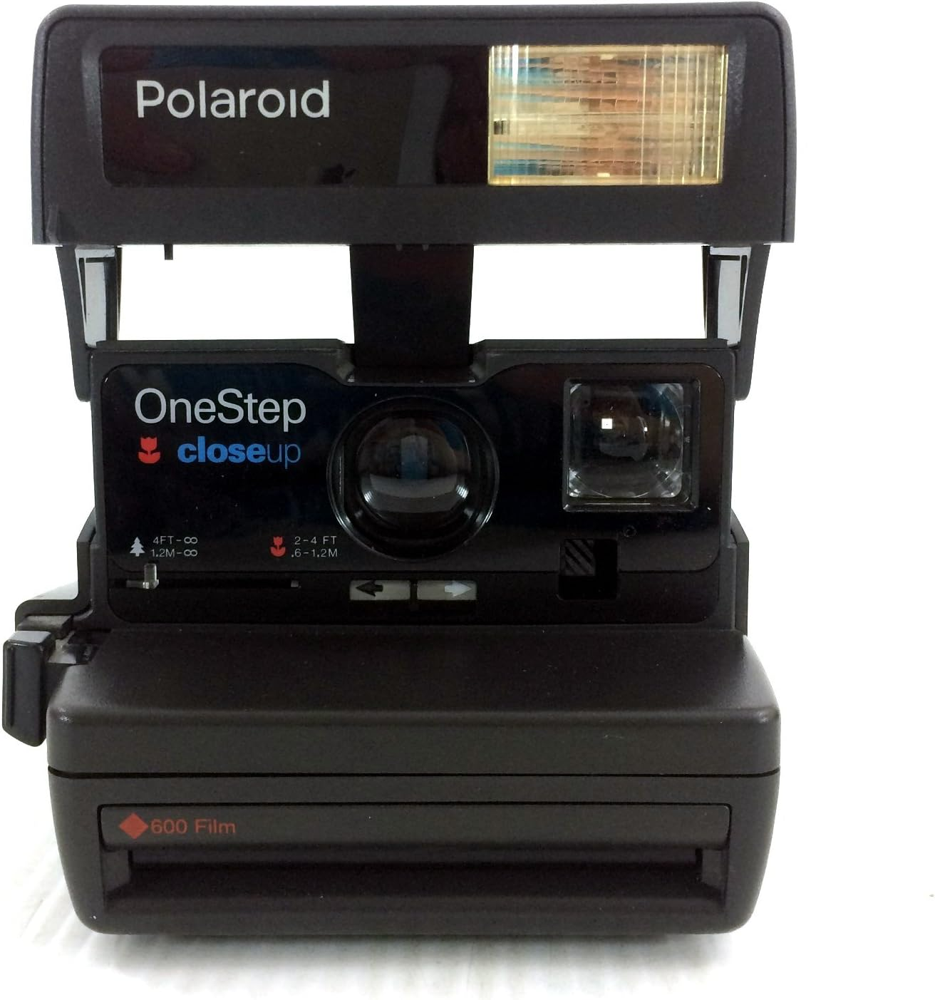
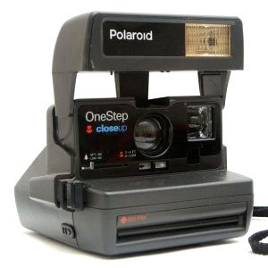
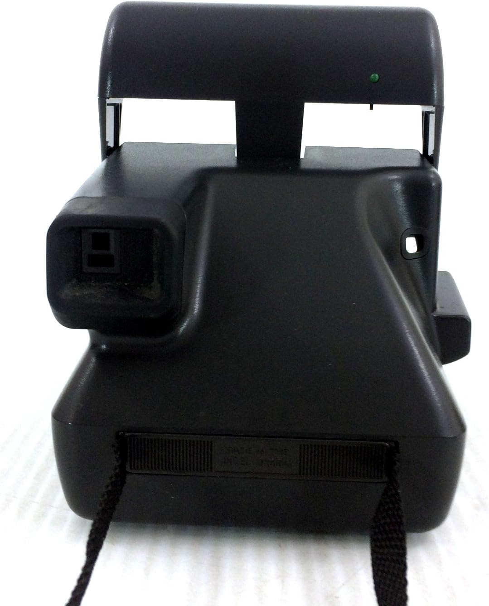

Polaroid OneStep



Polaroid OneStep was unveiled in 1977. It has a fixed focus of 103mm lens. It is used for advertising, music videos and fashion. Known for its accessibility and affordability, it is designed for everyday users. It became the face of Polaroid's philosophy: "Point. Shoot. Enjoy.". It is loved by artists like Andy Warhol, who embraced instant photography as a creative tool.
Instant Photography: Capture and print images in seconds, creating tangible memories on the spot.
$100.99